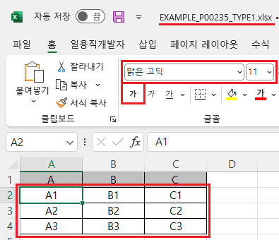
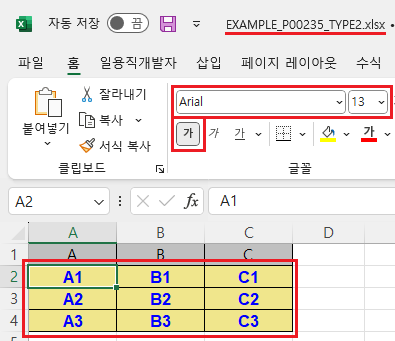
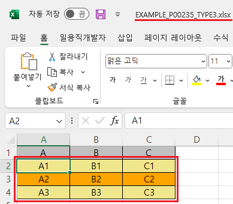

[GridView] 엑셀 다운로드 시 스타일 설정하기 - 바디(body)
1개요
GridView의 'advancedExcelDownload' 메소드를 사용하여, 엑셀 다운로드 시 바디 컬럼에 스타일을 설정한 예제입니다.
'advancedExcelDownload' 메소드의 첫 번째 인자인 JSON 객체에 설정할 수 있는 바디 컬럼의 스타일 속성은 다음과 같습니다.
bodyColor : [default: #FFFFFF] Excel 파일에서 그리드의 body의 색
bodyFontName : [default: 없음] Excel 파일에서 그리드의 body의 font name
bodyFontSize : Excel 파일에서 그리드의 body의 font size
bodyFontColor : [default: 없음] Excel 파일에서 그리드의 body의 font 색
bodyFontBold : [default: 없음] Excel 파일에서 그리드의 body의 Bold 설정 유무
oddRowBackgroundColor : [default: 없음] Excel 파일에서 그리드 body의 홀수 줄의 배경색
evenRowBackgroundColor : [default: 없음] Excel 파일에서 그리드 body의 짝수 줄의 배경색
다음의 속성은 'advancedExcelDownload' 메소드의 첫 번째 인자 JSON의 'useStyle' 속성을 'false'로 설정해야합니다.
- bodyColor
- bodyFontName
- bodyFontSize
- bodyFontColor
- bodyFontBold
2구현된 기능
엑셀 다운로드 - 기본 동작
엑셀 다운로드 - 바디의 스타일 설정
엑셀 다운로드 - 바디의 홀수행, 짝수행 배경색 설정
3예제 테스트 방법
다운로드된 엑셀 파일의 바디 영역의 스타일을 비교합니다.
3.1엑셀 다운로드 - 기본 동작
1
STEP 1: 초기 상태 확인하기
실행된 GridView를 확인합니다.
Image 1.브라우저(Chrome) 실행 예시

2
STEP 2: '엑셀 다운로드 - 기본 동작' 버튼을 클릭합니다.
엑셀 파일 'EXAMPLE_P00235_TYPE1.xlsx'이 다운로드 됩니다.
3
STEP 3: 실행된 결과를 확인합니다.
다운로드 된 'EXAMPLE_P00235_TYPE1.xlsx' 파일을 실행합니다. 바디 영역의 스타일을 확인합니다. (배경색, 글자체, 글자 크기, 글자색, 글자 굵게 설정 여부) 배경색을 제외한 나머지 설정은 엑셀에 설정된 기본 값으로 설정됩니다.
Image 2.다운로드된 엑셀(2021) 파일 예시

3.2엑셀 다운로드 - 바디의 스타일 설정
1
STEP 1: 초기 상태 확인하기
실행된 GridView를 확인합니다.
Image 3.브라우저(Chrome) 실행 예시
2
STEP 2: '엑셀 다운로드 - 바디의 스타일 설정' 버튼을 클릭합니다.
'EXAMPLE_P00235_TYPE2.xlsx' 파일이 다운로드 됩니다.
3
STEP 3: 실행된 결과를 확인합니다.
다운로드 된 'EXAMPLE_P00235_TYPE2.xlsx' 파일을 실행합니다. 바디 영역의 스타일을 확인합니다. - 배경색 : "#F0E68C"(Khaki) - 글자체 : "Arial" - 글자 크기 : "13" - 글자색 : "#0000FF"(Blue) - 글자 굵게 설정 : "true"
Image 4.다운로드된 엑셀(2021) 파일 예시

3.3엑셀 다운로드 - 바디의 홀수행, 짝수행 배경색 설정
1
STEP 1: 초기 상태 확인하기
실행된 GridView를 확인합니다.
Image 5.브라우저(Chrome) 실행 예시
2
STEP 2: '엑셀 다운로드 - 바디의 홀수행, 짝수행 배경색 설정' 버튼을 클릭합니다.
'EXAMPLE_P00235_TYPE3.xlsx' 파일이 다운로드 됩니다.
3
STEP 3: 실행된 결과를 확인합니다.
다운로드 된 'EXAMPLE_P00235_TYPE3.xlsx' 파일을 실행합니다. 바디 영역의 스타일을 확인합니다. - 홀수행 배경색 : "#F0E68C"(Khaki) - 짝수행 배경색 : "#FFA500"(Orange)
Image 6.다운로드된 엑셀(2021) 파일 예시

4구현 예시
4.1엑셀 다운로드 시 바디의 스타일 설정하기
1
'advancedExcelDownload' 메소드를 사용하여 설정합니다.
Example 1.Script
//예제 파일의 스크립트 "scwin.btn_ex2_onclick"를 참고하세요. var jsnOptions = { fileName: "EXAMPLE_P00235_TYPE2.xlsx", //엑셀의 파일명 useStyle : "false", //필수 설정 bodyColor : "#F0E68C", //바디의 배경색 - Khaki bodyFontName : "Arial", //바디의 글자체 bodyFontSize : "13", //바디의 글자 크기 bodyFontColor : "#0000FF", //바디의 글자색 - Blue bodyFontBold : "true" //바디의 글자 굵게 설정 }; //useStyle <String:N> [default: false] 다운로드시 css를 제외한, style을 excel에도 설정할 지 여부 (배경색,폰트) //bodyColor : <String:N> [default: #FFFFFF] Excel 파일에서 그리드의 body의 색 //bodyFontName : <String:N> [default: 없음] Excel 파일에서 그리드의 body의 font name //bodyFontSize : <String:N> Excel 파일에서 그리드의 body의 font size //bodyFontColor : <String:N> [default: 없음] Excel 파일에서 그리드의 body의 font 색 //bodyFontBold : <String:N> [default: 없음] Excel 파일에서 그리드의 body의 Bold 설정 유무 //GridView "grd_exam1"의 엑셀 다운로드 실행 grd_exam1.advancedExcelDownload(jsnOptions);
4.2엑셀 다운로드 시 바디의 홀수행, 짝수행 배경색 설정하기
1
'advancedExcelDownload' 메소드를 사용하여 설정합니다.
Example 2.Script
//예제 파일의 스크립트 "scwin.btn_ex3_onclick"를 참고하세요. var jsnOptions = { fileName: "EXAMPLE_P00235_TYPE3.xlsx", //엑셀의 파일명 oddRowBackgroundColor : "#F0E68C", //바디의 홀수행 배경색 - Khaki evenRowBackgroundColor : "#FFA500" //바디의 짝수행 배경색 - Orange }; //oddRowBackgroundColor : <String:N> [default: 없음] Excel 파일에서 그리드 body의 홀수 줄의 배경색 //evenRowBackgroundColor : <String:N> [default: 없음] Excel 파일에서 그리드 body의 짝수 줄의 배경색 //GridView "grd_exam1"의 엑셀 다운로드 실행 grd_exam1.advancedExcelDownload(jsnOptions);
5주요 API
advancedExcelDownload( options , infoArr )
options.bodyColor
options.bodyFontName
options.bodyFontSize
options.bodyFontColor
options.bodyFontBold
options.oddRowBackgroundColor
options.evenRowBackgroundColor